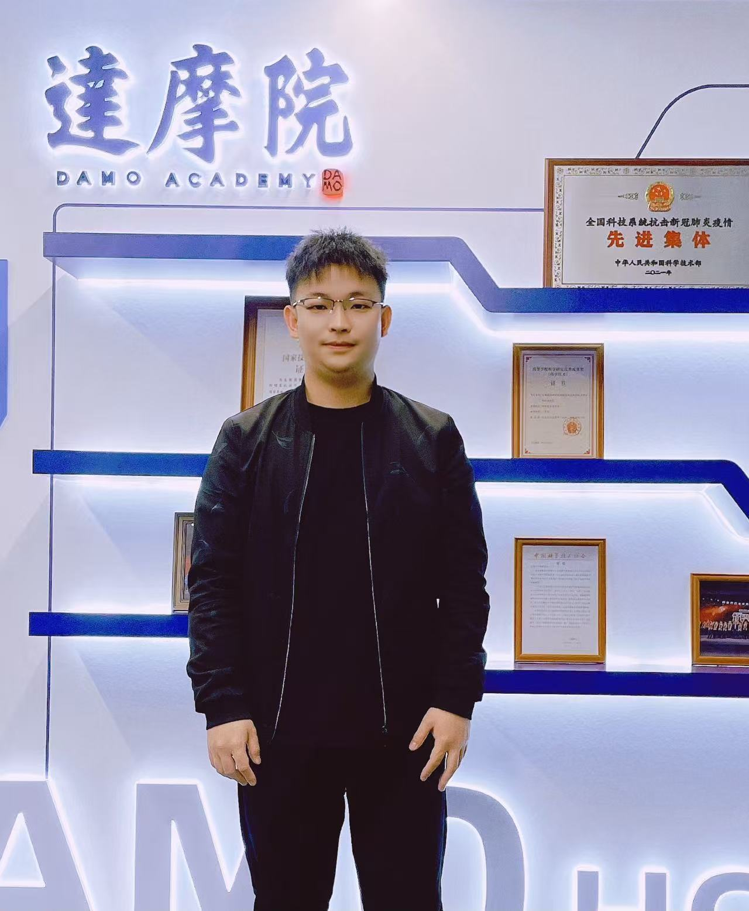

Dr. Chong ZHONG
Research Associate at PolyU.
Past Ph.D. student, 2020-2023.
Ph.D. thesis: Nonparametric Bayesian statistics harnessing the forces of data in survival analysis and change-point detection.
Email: 20039527r@connect.polyu.hk
Current and former group members supervised in research.
Research Associate at PolyU.
Past Ph.D. student, 2020-2023.
Ph.D. thesis: Nonparametric Bayesian statistics harnessing the forces of data in survival analysis and change-point detection.
Email: 20039527r@connect.polyu.hk

Full-time Ph.D.
Co-supervisor: Prof. Zhanli HU, SIAT, CAS.
Scholarship: Collaborative scheme.
Thesis theme: Bayesian factor model and its application in medical image analysis.
Email: Leonora-ran.jiang@connect.polyu.hk

Full-time Ph.D.
Co-supervisor: Dr. Elynn Chen, NYU.
Scholarship: GRF Incentive.
Thesis theme: Factor-analysis learning for dynamic multi-modality data.
2021-2024 M.Phil. in Statistics; 2017-2021 B.S. in Statistics.
Email: 550347471@qq.com

Full-time Ph.D.
Co-supervisor: Prof. CAI Jing, PolyU.
Scholarship: '3+1' Scholarship.
Email: 24056659r@connect.polyu.hk

Full-time Ph.D.
Co-supervisors: Prof. Yi-Qing NI, PolyU; Prof. Chengqi ZHANG, PolyU.
Scholarship: TRS Incentive.
Email: yunhao.liu@connect.polyu.hk

Incoming Ph.D.; begins September 2026.
Scholarship: PolyU Presidential PhD Fellowship Scheme (PPPFS).
Research focus: AI for healthcare.
Email: 22098789d@connect.polyu.hk

Incoming Ph.D.
Master's graduate in Computer Science from the National University of Defense Technology.
Research focus: Computer Vision, Medical AI, LLMs, and World Models, with interests in medical image analysis, visual perception and understanding, and LLM-driven intelligent modeling and reasoning.
Industry experience includes internships at Alibaba DAMO Academy and Ant Group. He has published multiple papers at top-tier international conferences including CVPR.

2023-Present.
Undergraduate Research and Innovation Scheme (URIS).
Email: 23097386d@connect.polyu.hk

2025-Present.
Undergraduate Research and Innovation Scheme (URIS).
Email: 24109385d@connect.polyu.hk

2025-Present.
Undergraduate Research and Innovation Scheme (URIS).
Email: 24101368d@connect.polyu.hk

2022-Present.
Email: 22099947d@connect.polyu.hk

2025-Present.
Email: 22098858d@connect.polyu.hk

Project Assistant.
Email: 23059218g@connect.polyu.hk

Project Assistant.
Email: 24066161g@connect.polyu.hk

2025-Present.
From: Central China Normal University.
Email: kangfu@polyu.edu.hk

2025-Present.
From: Changchun University of Technology.
Email: xuping.xu@polyu.edu.hk; 1202112007@stu.ccut.edu.cn

Postdoc, 2020.
Interests: Statistical modelling and inference for network data and tensor/matrix data.
Present: Associate Professor & University Youth Talent at South China Normal University.

M.Phil. and Ph.D., 2012-2018.
Ph.D. thesis: Hypothesis testing for two-sample functional/longitudinal data.
M.Phil. dissertation: Testing serial correlation in partially linear additive models.
Present: Postdoc at NICHD, NIH, USA.

Ph.D., 2016-2020.
Ph.D. thesis: Supervised statistical inference for data of versatile dimensionality with application to GWAS studies.
Present: Principal Statistician at BeiGene, China.
Ph.D., 2020-2023.
Ph.D. thesis: Nonparametric Bayesian statistics harnessing the forces of data in survival analysis and change-point detection.
Present: Research Associate at PolyU.

M.Phil., 2018-2020.
M.Phil. dissertation: Functional analysis of hospital admissions due to respiratory diseases between 2010 to 2017 in Hong Kong.
Present: Ph.D. in financial mathematics at PolyU.

M.Phil., 2019-2021.
M.Phil. dissertation: A Bayesian comparison in Stan and NIMBLE by trimmed mean regression.
Present: Product Manager at Huawei.

M.Phil., 2022-2024.
M.Phil. dissertation: On Bayesian prediction under nonparametric transformation models with doubly censored data.
Present: Ph.D. student at Department of Applied Social Sciences, PolyU.

2023.
M.S. dissertation: Bayesian matrix factor model with Indian buffet process priors for image denoising.
Present: Research Assistant at PolyU.

2022.
M.S. dissertation: Latent tensor regression based on the Tucker tensor factor model with application to breast cancer study.
Present: Ph.D. student at CUHK.
2022.
M.S. dissertation: Variational Bayesian inference in factor models for high-dimensional vector observations.
Present: Collaborative Ph.D. scheme by PolyU and SIAT, CAS.

2020-2022.
Project title: Joint feature screening incorporating network structure among responses.
Present: Ph.D. student in Biostatistics at the University of Michigan, USA.

2022.
Project title: Assessing error rates in multiple examiner groups using regression methods.
Present: Ph.D. student at the University of Maryland, College Park.

2022.
Present: Ph.D. student at the University of Chicago Booth School of Business.